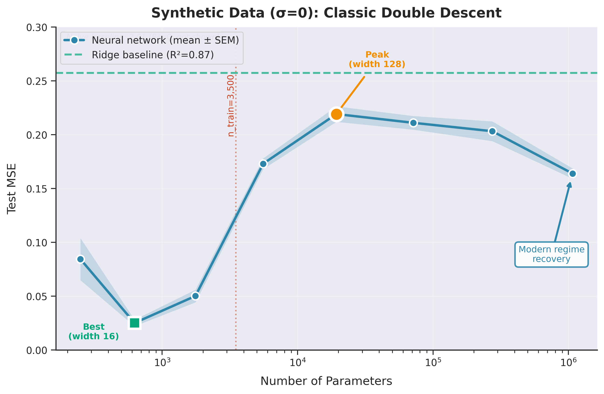
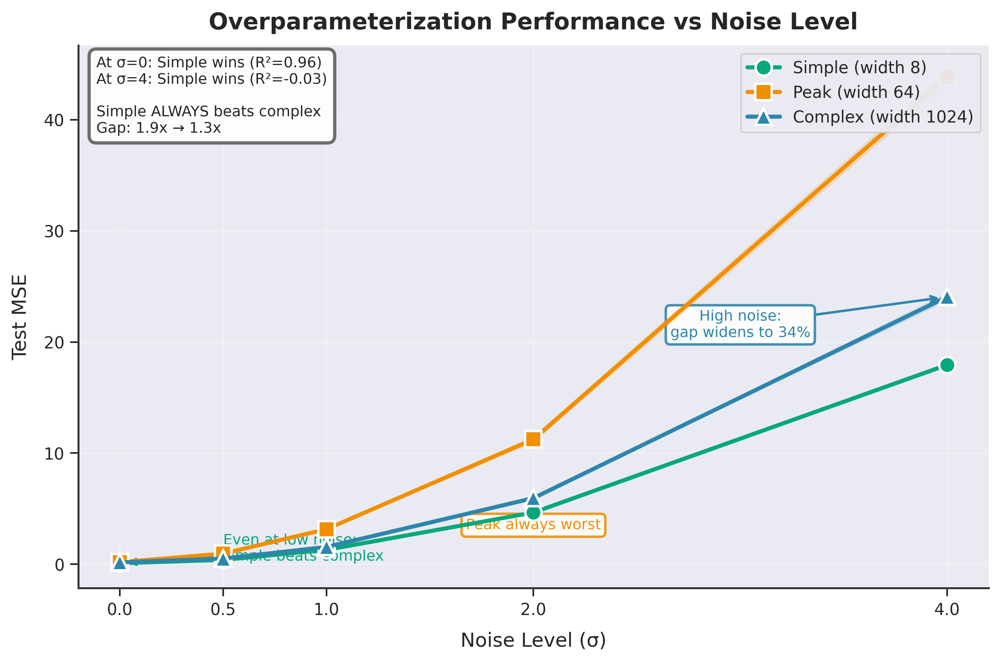
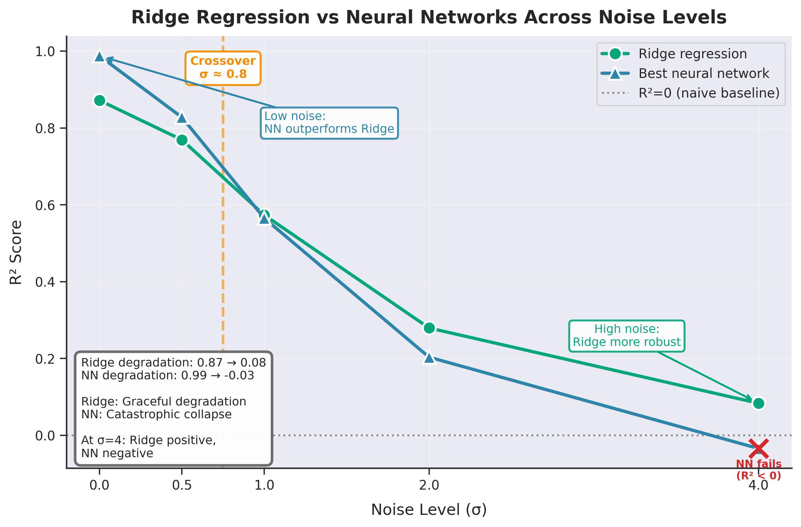
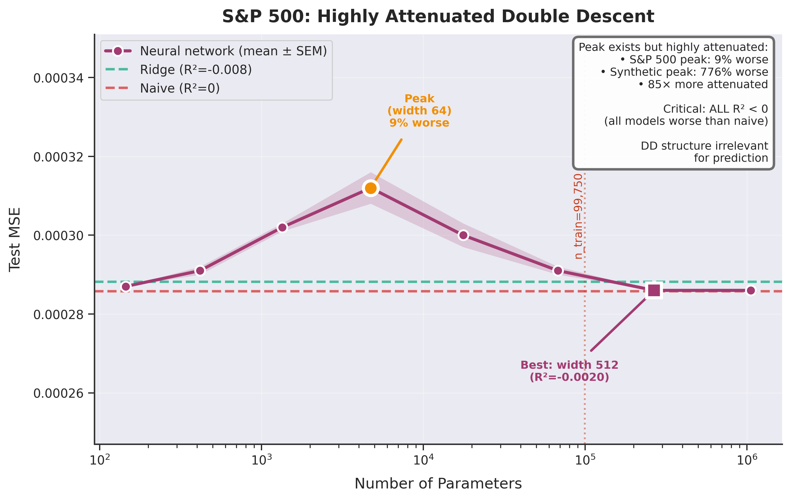
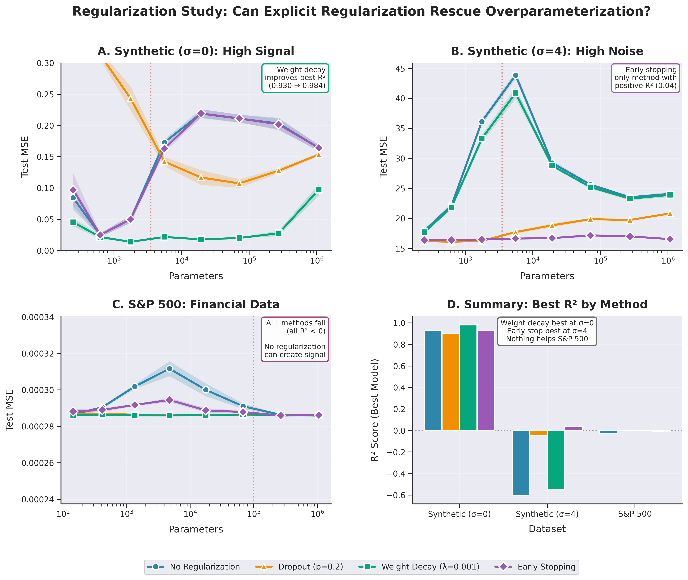

| Double Descent in Financial Time Series | |||
| Nicholas Wong | |||
| Final project for 6.7960 Deep Learning, MIT | |||
Results
This section evaluates the three research hypotheses using the experimental protocols described above. We first confirm that the implementation reproduces double descent in a clean synthetic setting. We then examine how this behavior changes as noise increases and compare these results with the behavior observed in S&P 500 returns.
Experiment 1: Synthetic high signal-to-noise ratio
Figure 2 shows test mean squared error as a function of model width for the synthetic dataset with σ = 0. The curve exhibits the characteristic double descent shape. Test error decreases with width, rises sharply near the interpolation threshold, and decreases again for large models. The interpolation peak is substantial: the worst model (width 128) performs 8.8 times worse than the best model (width 16). At large widths, the model recovers low test error, indicating that implicit regularization guides overparameterized networks toward solutions that generalize well when the mapping is fully learnable.

Figure 2. Test MSE versus model width for synthetic data with σ = 0.
Experiment 2: Effect of decreasing signal-to-noise ratio
We next examine how label noise alters generalization. Figure 3 reveals a surprising pattern: simple models (width 8) consistently outperform complex models (width 1024) across all noise levels, with no crossover point observed. Even at σ=0 where neural networks achieve excellent performance (R2=0.99), and at σ = 4 the simple model achieves 34% lower error. Notably, the best-performing width shifts from 16 at σ=0 to 8 at all higher noise levels, indicating that optimal model complexity decreases as signal-to-noise ratio degrades. The threshold-width model (width 64) consistently exhibits the poorest robustness, reflecting its sensitivity to interpolation.
Table 2 quantifies how the interpolation peak evolves with noise. The peak consistently occurs near width 64 across all synthetic noise levels, which is consistent with theoretical predictions that the peak appears at the interpolation threshold. However, its magnitude decreases systematically: from 776% worse than the best model at σ=0, to 145% worse at σ=0.5, stabilizing around 142-145% for σ≥1.0. This 86-fold attenuation demonstrates that while the peak persists structurally, its practical impact diminishes as noise dominates signal.

Figure 3. Performance of simple, threshold, and complex models as σ increases.
Figure 4 reports out-of-sample R² for the same three models. The threshold model fails first as noise increases, followed by the complex model, while the simple model remains most stable. This pattern is consistent with theoretical predictions: models near the interpolation threshold are the least robust because they transition between underparameterized and overparameterized regimes.

Figure 4. Out-of-sample R² for representative models across noise levels.
We also compare neural networks with ridge regression. Figure 5 shows that ridge degrades smoothly as noise increases, while the best neural network across widths deteriorates sharply once noise dominates the signal. At high noise levels ridge regression outperforms all neural networks, maintaining positive R²=0.08 at σ=4 while the best neural network degrades to R²=-0.03. This illustrates that ridge's explicit L2 regularization and linear inductive bias provide graceful degradation, whereas neural networks' flexibility becomes a liability when signal is weak.

Figure 5. Comparison of ridge regression and neural networks across noise levels.
These results confirm the second hypothesis: the interpolation peak flattens as σ increases, and by σ = 4 the double descent curve is nearly flat.
Experiment 3: Financial time series
Figure 6 shows test mean squared error versus model width for S&P 500 returns. The curve is almost flat across four orders of magnitude in parameter count. A small peak appears near width 64, but its magnitude is minimal—only 9 percent worse than the best model. All models achieve negative R², indicating that none outperform the naive mean predictor. This behavior matches the synthetic results at high noise levels.

Figure 6. Test MSE versus model width for S&P 500 data.
The contrast with synthetic data is striking. Table 2 quantifies this difference: on synthetic data with σ=0, the interpolation peak is 776% worse than the best model, while on S&P 500 data the peak is only 9% worse. This represents a 86-fold attenuation of the double descent structure. Moreover, the best neural network achieves R²=0.988 on synthetic data but R²=-0.002 on financial data, indicating that even the optimal model configuration fails to extract any predictive signal from equity returns. Real financial data behave like a system with signal-to-noise ratio far beyond σ=4, where the conditions necessary for double descent do not hold.
These results confirm the third hypothesis. When the data generating process is noisy and unstable, increasing model capacity does not improve generalization and can worsen robustness.
Extension: Could regularization rescue overparameterization?
One natural question arises from the preceding results: could explicit regularization techniques rescue overparameterization in low-signal domains? To address this, we repeated the width sweep experiments with four regularization strategies: dropout (p=0.2), weight decay (λ=0.001), early stopping on validation loss, and no regularization (baseline). We applied each method to three representative datasets: synthetic data with σ=0 (high signal), synthetic data with σ=4 (high noise), and S&P 500 returns (no signal). Figure 7 shows the results.

Figure 7. Regularization study across three datasets showing that different methods work in different noise regimes, but none help on financial data.
On clean synthetic data (σ=0), weight decay provided the strongest performance, improving R² from 0.988 to 0.993 by imposing an explicit structural prior. Early stopping and no regularization performed identically, while dropout reduced performance to 0.947 by removing too much model capacity. This demonstrates that when signal is strong, L2 regularization can improve upon implicit regularization alone.
At high noise (σ=4), the pattern reversed dramatically. Early stopping was the only method achieving positive R² (0.056), preventing the model from overfitting to noise during training. Both weight decay and no regularization failed catastrophically, producing large negative R² values with high variance across seeds. In this regime, the problem shifted from bias to variance explosion, and only early termination of training prevented models from fitting spurious noise patterns.
On S&P 500 returns, all four methods failed to achieve positive R² and produced very similar, nearly flat test error curves. Every regularization strategy produced negative R², with the best method (weight decay at R²=-0.0005) still worse than the naive mean predictor. This demonstrates that when predictive signal is fundamentally absent, no amount of regularization can improve generalization.
Our results suggest a hierarchy of regularization effectiveness that depends on signal-to-noise ratio: weight decay excels when signal is strong, early stopping helps when noise dominates, but nothing works when signal is absent. The failure of all methods on financial data confirms that overparameterization in this domain reflects a fundamental signal problem rather than a technical regularization problem. Different regularization strategies can modify the double descent curve under appropriate conditions, but they cannot create predictive structure where none exists.